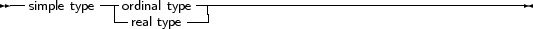
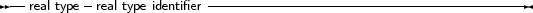

The base or simple types of Free Pascal are the Delphi types. We will discuss each type separate.
_________________________________________________________________________________________________________Simple types


___________________________________________________________________